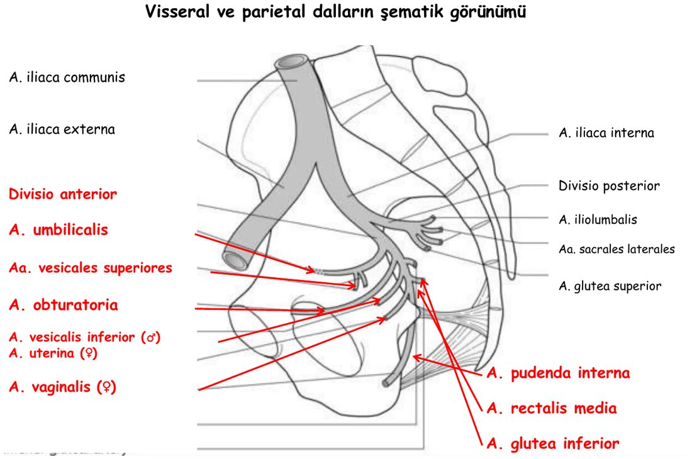

Bölüm 5 · Arteriae iliacae
Pelvis arterlerinden gelen sorular tek bir dalın yerini ya da geçtiği deliği sorar: foramen suprapiriforme'den çıkan a. glutea superior, corpus cavernosum'un ortasındaki a. profunda penis. Sunum bunlara ek olarak üç klinik komşuluğu vurgular: a. uterina ile ureter, corona mortis ve a. epigastrica inferior ile kasık fıtıkları. Bu bölüm önce iki bifurkasyonu, sonra a. iliaca interna'nın dallarını, en sonda a. iliaca externa'yı anlatır.
Pelvis sınırı linea terminalis'tir ve pelvis major ile pelvis minor'u ayırır. Arterlerin yerini kemik ve kas işaretleri belirler:
Komşulukları. Ureter bifurkasyon bölgesini önden çaprazlar. M. psoas major arterin posterolateralindedir. Vv. iliacae communes arterlerin arkasındadır. Sağ a. iliaca communis sol v. iliaca communis'in önünden geçer. Sol ven arkada vertebra cismi, önde bu arter arasında sıkışabilir. Bu sıkışma sol bacakta venöz dönüşü bozar ve sol taraflı derin ven trombozuna yatkınlık yaratır (May-Thurner sendromu). Ven basısı kanın geri dönüşünü, arter tıkanması ise dokulara kan ulaşmasını azaltır.
A. iliaca interna pelvis minor içinde retroperitoneal olarak aşağı ve arkaya uzanır. Foramen ischiadicum majus yakınında divisio anterior ve divisio posterior'a ayrılır. Pelvis duvarını ve organlarını, perineyi ve regio glutea'yı besler. Önünde ureter, arkasında v. iliaca interna ve truncus lumbosacralis, lateralinde v. iliaca externa ve n. obturatorius bulunur. Dallar iki ayrı ölçüte göre sınıflanır. Divisio anterior ya da posterior dalın çıktığı gövdeyi, visseral ya da parietal ise beslediği yeri belirtir:
| Gövde | Visseral dallar | Parietal dallar |
|---|---|---|
| Divisio anterior | A. umbilicalis (→ aa. vesicales superiores), a. vesicalis inferior, a. rectalis media; kadında a. uterina ve a. vaginalis | A. obturatoria, a. pudenda interna, a. glutea inferior |
| Divisio posterior | Yok | A. iliolumbalis, aa. sacrales laterales, a. glutea superior |

A. umbilicalis fetüste kanı plasentaya taşır. Doğumdan sonra proksimal bölümü açık kalır (pars patens) ve aa. vesicales superiores ile mesanenin üst kısmını besler. Kapanan distal bölümü (pars occlusa) lig. umbilicale mediale'yi oluşturur. Bu bağ orta hattaki lig. umbilicale medianum (urachus kalıntısı) ile karıştırılmamalıdır. A. vesicalis inferior erkekte mesanenin alt kısmı, prostat ve gll. vesiculosae'yi besler. Kadında bu alanı a. vaginalis besler. A. rectalis media rektumun orta kısmını besler ve bazen a. vesicalis inferior ile ortak çıkar.
A. uterina divisio anterior'dan çıkar, lig. latum uteri'nin tabanında cervix uteri'ye doğru ilerler. Cervix'in yaklaşık 1-2 cm lateralinde ureter'i üstten çaprazlar. Ureter arterin altından geçerek mesaneye gider ("köprünün altından akan su"). Histerektomide a. uterina bağlanırken ureter bu yüzden yaralanabilir. Arter cervix düzeyinde ramus ascendens ve descendens'e ayrılır. Yukarıda cornu uteri yakınında a. ovarica ile, aşağıda a. vaginalis ile anastomoz yapar.
A. obturatoria n. obturatorius ve v. obturatoria ile birlikte pelvis yan duvarında ilerler. Medialinden ureter ve erkekte ductus deferens geçer. Canalis obturatorius'tan geçerek uyluğun medial bölümüne ulaşır, mm. adductores'i ve kalça eklemini besler (lig. capitis femoris'in arteri, Bölüm 7.3). A. obturatoria a. iliaca externa'dan ya da a. epigastrica inferior'dan da çıkabilir. Corona mortis ramus superior ossis pubis'in arkasında a. obturatoria ile a. iliaca externa sistemi arasındaki bağlantıdır. Arteriyel örneğinde a. obturatoria ile a. epigastrica inferior'un r. pubicus'u birleşir. Venöz de olabilir. Pelvis kırığı ve fıtık cerrahisinde yaralanırsa ciddi kanamaya yol açar.
A. pudenda interna foramen ischiadicum majus'tan m. piriformis'in altından pelvisi terk eder. Spina ischiadica ve lig. sacrospinale'nin arkasından döner, foramen ischiadicum minus'tan perineye girer ve fossa ischioanalis'in yan duvarındaki canalis pudendalis (Alcock kanalı) içinde ilerler. Dalları: canalis analis'in alt kısmına a. rectalis inferior, perineye a. perinealis (erkekte rr. scrotales posteriores, kadında rr. labiales posteriores), a. bulbi penis (bulbi vestibuli) ve a. urethralis. Uç dalları a. profunda penis ve a. dorsalis penis'tir. Kadında karşılıkları a. profunda clitoridis ve a. dorsalis clitoridis'tir.
A. profunda penis corpus cavernosum penis'in ortasında uzanır ve ereksiyon için önemli olan arterdir (2024-2025). Dallarının (aa. helicinae) genişlemesi cisimlerin kanla dolmasını sağlar. A. dorsalis penis ise tunica albuginea'nın dışında, penisin sırtında seyreder ve glans ile deriyi besler. A. bulbi penis bulbus'u ve corpus spongiosum'un arka kısmını besler.
Aa. gluteae. M. piriformis foramen ischiadicum majus'u ikiye ayırır. A. glutea superior divisio posterior'dan çıkar ve m. piriformis'in üstünden (foramen suprapiriforme) regio glutea'ya ulaşır (2023-2024 S3). M. gluteus medius ve minimus'u besler. A. glutea inferior divisio anterior'dan çıkar, m. piriformis'in altından (foramen infrapiriforme) geçer, m. gluteus maximus'u ve uyluğun arka kısmını besler. A. pudenda interna da infrapiriform aralıktan çıkar. A. iliolumbalis m. psoas major'un medialine doğru yukarı uzanır ve r. lumbalis ile r. iliacus verir. Aa. sacrales laterales sakrumun ön yüzünde iner ve rr. spinales'leri foramina sacralia anteriora'dan canalis sacralis'e girer. 2025-2026 uygulama sınavında a. sacralis lateralis gösterildi.
Pelvis'te kollateral dolaşım. A. ovarica ve a. sacralis mediana doğrudan aortadan gelir ve a. iliaca interna'nın dallarıyla birleşir. Uterus'ta a. uterina ile a. ovarica, rektumda üç a. rectalis, regio glutea'da aa. gluteae ile a. profunda femoris'in dalları (Bölüm 7.3) anastomoz yapar.
A. iliaca externa a. iliaca communis'in genellikle daha kalın uç dalıdır. M. psoas major'un medial kenarı boyunca, pelvis girişinin kenarını izleyerek öne ve aşağı uzanır. Lig. inguinale'nin arkasında lacuna vasorum'dan geçer ve a. femoralis adını alır. Bu geçiş noktası yüzeyde SİAS ile symphysis pubica arasının ortasıdır (midinguinal nokta). Bu nokta lig. inguinale'nin orta noktasıyla aynı değildir: lig. inguinale SİAS ile tuberculum pubicum arasında uzanır. V. iliaca externa proksimalde arterin arkasında, distalde medialindedir. Arterin proksimal kısmını ureter ve vasa testicularia ya da ovarica çaprazlayabilir. İki dalı lig. inguinale'nin hemen üstünden çıkar:
Kasık fıtıklarının ayrımı a. epigastrica inferior'a göre yapılır. Anulus inguinalis profundus vasa epigastrica inferiora'nın lateralindedir. Hernia inguinalis indirecta bu halkadan girer, yani damarların lateralindedir. Hernia inguinalis directa karın duvarının zayıf bölgesinden (Hesselbach üçgeni) doğrudan çıkar ve damarların medialindedir. Hernia femoralis ise lig. inguinale'nin altında, v. femoralis'in medialindeki canalis femoralis'ten geçer (Bölüm 7.2).
Doğru: A. A. glutea superior divisio posterior'dan çıkar ve foramen ischiadicum majus'un m. piriformis'in üstünde kalan bölümünden (foramen suprapiriforme) regio glutea'ya ulaşır.
B yanlış: a. glutea inferior m. piriformis'in altından çıkar. C yanlış: a. pudenda interna da infrapiriform aralıktan çıkar ve foramen ischiadicum minus'tan perineye girer. D yanlış: a. obturatoria canalis obturatorius'tan uyluğun medialine gider. E yanlış: a. iliolumbalis pelvisten çıkmaz, yukarıya regio lumbalis ve iliaca'ya gider.
Not: kayıtta yalnızca doğru cevap yazılıdır. Diğer şıklar tamamlanmıştır.
Doğru: C. A. pudenda interna'nın uç dalı a. profunda penis her iki corpus cavernosum'un ortasında uzanır. Kıvrımlı dalları (aa. helicinae) genişlediğinde cisimler kanla dolar.
A yanlış: a. bulbi penis bulbus penis'i ve corpus spongiosum'un arka kısmını besler. B yanlış: a. urethralis corpus spongiosum içinde üretraya eşlik eder. D yanlış: a. dorsalis penis cisimlerin dışında, penisin sırtında seyreder. E yanlış: a. perinealis perine kaslarını ve skrotumun arka kısmını besler.
Doğru: B. A. uterina cervix'in yaklaşık 1-2 cm lateralinde ureter'i üstten çaprazlar. Ureter arterin altından geçerek mesaneye ulaşır.
A yanlış: n. obturatorius pelvis yan duvarında, a. obturatoria ile birlikte daha yukarıda ve lateralde seyreder. C yanlış: a. ovarica lig. suspensorium ovarii içinde uterus'un köşesine gelir. D yanlış: lig. teres uteri uterus'un köşesinden canalis inguinalis'e gider. E yanlış: v. iliaca externa pelvis girişinin kenarındadır.
Doğru: D. Corona mortis a. obturatoria (a. iliaca interna sistemi) ile a. iliaca externa sistemi arasındaki bağlantıdır. Arteriyel örneği sıklıkla a. epigastrica inferior'un r. pubicus'u üzerinden kurulur ve ramus superior ossis pubis'in arkasında seyreder.
A yanlış: iki gluteal arter kalçada anastomoz yapar, os pubis'in arkasında değil. B yanlış: iki pudendal arter perinede birleşir. C yanlış: bu anastomoz crista iliaca boyuncadır. E yanlış: bu anastomoz uterus'un yan kenarındadır.
Doğru: B. Anulus inguinalis profundus'tan giren fıtık hernia inguinalis indirecta'dır ve vasa epigastrica inferiora'nın lateralindedir. A. epigastrica inferior lig. inguinale'nin hemen üstünde a. iliaca externa'dan çıkar.
A ve C yanlış: damarların medialindeki fıtık direkt fıtıktır ve derin halkadan geçmez. D yanlış: konum doğru, ama a. femoralis'in epigastrik dalı yüzeyeldir (a. epigastrica superficialis). E yanlış: konum doğru, ama arterin kaynağı a. iliaca interna değildir.
Doğru: E. A. glutea inferior tipik olarak divisio anterior'dan çıkar ve m. piriformis'in altından geçer.
A, B ve C yanlış: divisio posterior'un üç dalı tam olarak bunlardır ve üçü de parietaldir. D yanlış: a. circumflexa ilium profunda a. iliaca interna'nın değil a. iliaca externa'nın dalıdır.
Doğru: D. A. umbilicalis'in doğumdan sonra kapanan distal bölümü (pars occlusa) lig. umbilicale mediale'yi oluşturur. Proksimal açık bölümü aa. vesicales superiores'i verir.
A yanlış: urachus orta hattaki lig. umbilicale medianum'u oluşturur. B yanlış: v. umbilicalis karaciğerin lig. teres hepatis'ine dönüşür. C yanlış: ductus venosus lig. venosum olur. E yanlış: a. epigastrica inferior açık bir arterdir ve plica umbilicalis lateralis'i kaldırır.